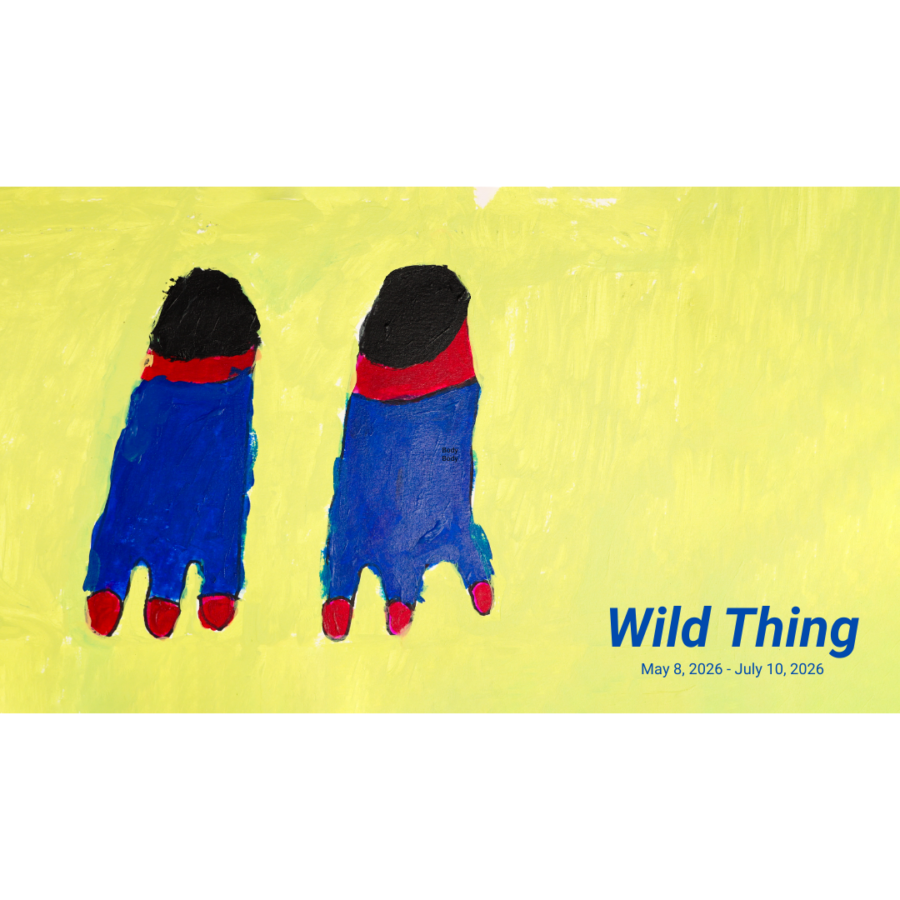

Wild Thing
Elena Ailes – Chris Austin – Sayera Anwar – Cecilia Beaven – Renata Berdes – Chris Bradley – Zachary Cahill – Isamu Guy Conners – Mari Eastman – Sam Filicky – Joshi Radin Flores – Rosemary Hall – Erin Hayden – Lucy Cash and Mark Jeffery – Lawrence M. – Allyson Packer – Jasmeen Patheja – Carol Pyes – Tongji Philip Qian – Kellie Romany – D. Rosen – Alex Scott – Jacqueline Surdell – Chris Viau – Jean Wilson
Since 2020, Meta’s algorithm has been flooded with snippets of interspecies empathy- animals in different states of crisis have begun to display “human-like” behavior. From birds caring for pregnant felines, to horses rearing rabbits, or the story of a raccoon and dog forming a lifelong bond… existing (and surviving) stressors of climate catastrophe, war, and urban degradation, we quietly watch primates hug one another, refuse abandonment despite human threat, touching and protecting one another in ways that exceed the human affective awareness.
Wild Thing traces these parallel trajectories and continuities, not just between the bipeds and beasts, but more broadly, within the worlds of artists. Seeking visions and eccentricities from Arts of Life’s studio artists paired with contemporaries of our time, Wild Thing will explore the evolution of all animals, some beasts, and other mutants (some more mutant than others) to explore what remains to be learned from our fellow species. At a time when less-than-human empathies and kindness seem to exceed more-than-human cravings for interplanetary domination, worldly greed, and bloodlust, several artists collectively scratch at the uncanny zone between human-animal-nature, questioning hierarchical notions of humans being ‘higher’ or more evolved in our understanding, in the scala naturae.
Opening reception:
Friday May 8th, 2026
5:00 – 8:00 pm.
Guest Hours with the curator
TBA ******Guest curated by Pia Singh